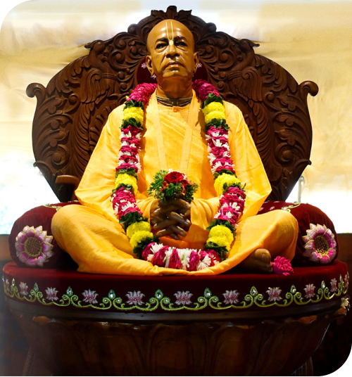

<section class="welcom_to_bace">
  <div class="container">
    <h1 class="main_headding">Welcome to Iskcon Bace</h1>
    <div class="d-lg-flex about_bace">
      <div class="about_bace_img">
        <figure>
          
        </figure>
      </div>
      <div class="about_bace_text">
        <p>Bhaktivedanta Academy for Culture & Education (BACE a preaching wing of ISKCON [International Society for
          Krishna CONsciousness]) is an organization oriented towards training youth in moral and spiritual values based
          on the timeless principles of the Bhagavat-Gita, Srimad Bhagavatam & the Vedas.</p>
        <p>Modern world is facing great degradation of character, culture and values. For a sincere human being to live
          a
          life of pure principles is a great challenge.</p>
        <p>The BACE conveys the ideas that it is 'life-giving' center in a 'stress-ridden fast-paced rat race society'
          that is like a desert.</p>
        <p>BACE was started by ISKCON Pune under the guidance of His Grace Radheyshyam Prabhu [M.Tech, IIT] in year 1998
          with a view to cater the youth a series of moral values based on the teachings of Lord Chaitanya.</p>
        <p>In Delhi, BACE was started in the year 2004 under the guidance of His Grace Mohan Rupa Prabhu [President,
          ISKCON Delhi].</p>
        <a class="read_more_btn" href="javascript:void();">
          <svg xmlns="http://www.w3.org/2000/svg" width="15" height="9" viewBox="0 0 15 9" fill="none">
            <path
              d="M9.78125 3.23438H0.375C0.15625 3.23438 0 3.42188 0 3.60938V5.35938C0 5.57812 0.15625 5.73438 0.375 5.73438H9.78125V7.20312C9.78125 7.85938 10.5938 8.20312 11.0625 7.73438L13.75 5.01562C14.0625 4.73438 14.0625 4.26562 13.75 3.98438L11.0625 1.26562C10.5938 0.796875 9.78125 1.14062 9.78125 1.79688V3.23438Z"
              fill="#3A4F66" />
          </svg>
          read more</a>
      </div>
    </div>
  </div>
</section>
